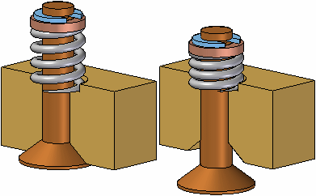

Adjustable Part command (Assembly environment)
Specifies that a part is adjustable in the assembly. When you specify that a part is adjustable, you can use dimensions and variables to control the size and shape of the part.

For in-depth information on defining and using adjustable parts, see the Adjustable parts in assemblies Help topic.
How do I
Define an adjustable partSet the adjustable/rigid status of a subassembly
Learn more
Adjustable and rigid assembliesAdjustable parts in assemblies
Look up more details
Adjustable Assembly commandAdjustable Part command (Part or Sheet Metal environment)
Rigid Assembly command
Rigid Part command
Edit Adjustable Part command
Adjustable Part dialog box